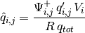

Variance Reduction¶
CADIS Method¶
The Consistent Adjoint-Driven Importance Sampling (CADIS) method [1] is a Monte Carlo variance reduction method that utilizes a deterministic estimate of the adjoint flux (the importance) to generate a biased source and weight windows that optimize a Monte Carlo simulation relative to a detector response function. One major feature of the scheme is “consistency”, that is, weight windows are chosen such that particles are always born within them.
In the CADIS method the response is defined as:
where  is the probability distribution function describing the source
strength as a function of the phase space variable
is the probability distribution function describing the source
strength as a function of the phase space variable  (which may
represent any combination of space, energy, and direction).
is the adjoint flux relative to the detector response function being
optimized. The CADIS method defines the biased source distribution as:
(which may
represent any combination of space, energy, and direction).
is the adjoint flux relative to the detector response function being
optimized. The CADIS method defines the biased source distribution as:
The corresponding weight window lower bounds are defined by:
where  is the ratio of the weight window upper bound to the weight
window lower bound (default of 5 in MCNP5).
is the ratio of the weight window upper bound to the weight
window lower bound (default of 5 in MCNP5).
PyNE implementation¶
The PyNE implementation of the CADIS method is a mesh-based implementation and is designed to be used in conjunction with the mesh-based source sampling capabilities in the source_sampling module. This means that the above method, which is continuous in phase space must be adapted for discretization of space (mesh volume elements) and energy (in energy bins).
Source density ( , units: ) is the
canonical quantity for representing a mesh-based source within PyNE. This
means that the first step of the CADIS method within PyNE is to create a
PDF from a source density mesh. The total source strength is
first found by integrating the source density over space (
, units: ) is the
canonical quantity for representing a mesh-based source within PyNE. This
means that the first step of the CADIS method within PyNE is to create a
PDF from a source density mesh. The total source strength is
first found by integrating the source density over space ( ) and energy
(
) and energy
( ):
):
The PDF can then be defined by:
The response can then be calculated by integrating the product of and the adjoint flux over all phase space:
The weight window lower bound is then:
These values are tagged to the weight window output mesh and can be printed out as an MCNP5 WWINP file. In the event that the adjoint flux is 0 for some , the value is replaced with 0. MCNP5 will not play the weight window game when a particle enters a region of phase space where the weight window lower bound is 0.
The biased source strength is:

However, the biased source strength is not the quantity of interest, because the source_sampling module is expecting biased source densities. The biased source densities that are tagged to the output mesh are:
Assumptions¶
The source density mesh and adjoint flux mesh must have the spatial bounds.
Sample Calculations¶
In this section the expected results for the the test_variancereduction.py unit test “test_cadis_multiple_e” are calculated. Consider a 2D mesh with the following properties.
|
|
|

Here, the vector quantities represent values at two energy groups. First
calculate and  :
:
The expected results are:
![ww &= \frac{R}{\Psi_{i, j}^{+} \, \frac{\beta + 1}{2}} \\
&= [ \frac{1.0587398374}{1.1 \cdot{3}}, \frac{1.0587398374}{1.2 \cdot{3}},
\frac{1.0587398374}{1.3 \cdot{3}}, \frac{1.0587398374}{1.4 \cdot{3}}, \\
& \qquad \frac{1.0587398374}{0 \cdot{3}}, \frac{1.0587398374}{1.6 \cdot{3}},
\frac{1.0587398374}{1.7 \cdot{3}}, \frac{1.0587398374}{1.9 \cdot{3}} ] \\
&= [0.3208302538, 0.2940943993, 0.2714717532, 0.2520809137, \\
& \qquad 0.0, 0.2205707995, 0.2075960465, 0.1857438311]](../_images/math/b4cbcead8fe514f2d6286ae858a8e0ce603100b8.png)
Notice that the value in the vector that is a division by 0 has been replaced with 0.
References¶
- [1] Haghighat, A. and Wagner, J. C., “Monte Carlo Variance Reduction with
- Deterministic Importance Functions,” Progress in Nuclear Energy, Vol. 42, No. 1, pp. 25-53, 2003.

Getting Started
Using PyNE
- User's Guide
- Python API Documentation
- C++ & Fortran API Documentation
- Join the Users mailing list.
- Report an Issue
Contribute
- Developer's Guide
- Source Code
- Join the Developers mailing list.
- The PyNE Team